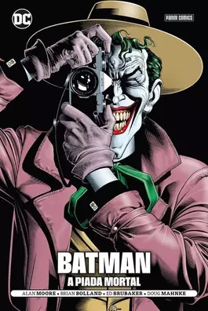

Batman: A Piada Mortal
Encontre neste único volume com 136 páginas duas das histórias que melhor souberam descrever a figura do Coringa e sua relação com o Batman. Em Batman: A Piada Mortal, Alan Moore e Brian Bolland nos levam à mente do Príncipe Palhaço do Crime, mostrando-nos o que poderia ser um vislumbre de seu passado. Em Batman: O Homem Que Ri, Ed Brubaker e Doug Mahnke revisitam as primeiras aparições do Coringa, voltando no tempo aos dias de seu primeiro confronto com o Batman, oferecendo novas perspectivas a histórias clássicas. Uma viagem alucinante ao mundo daquele que é o vilão dos quadrinhos por excelência!